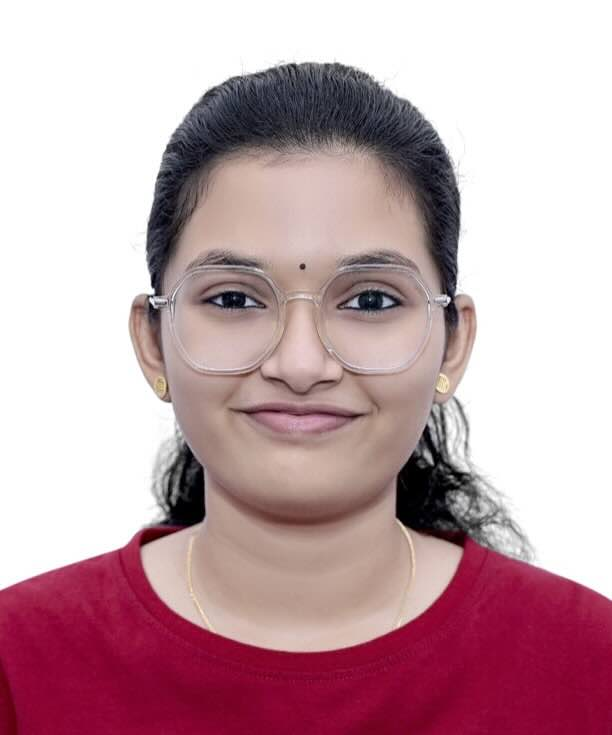

Harsha Byju
MCA Student | Web Development Learner
Skills
C | Python | HTML | CSS | Basic Java
About Me
I am Harsha Byju, currently pursuing my Master of Computer Applications (MCA) from Christ College of Engineering (Autonomous),Irinjalakuda. I have completed my Bachelor's degree in B.Sc Computer Science from St. Thomas College (Autonomous), Thrissur.
I have a basic understanding of programming languages such as C, Python, HTML, and CSS, along with introductory knowledge in Java and Operating Systems. I am continuously working to improve my programming skills.
As part of my academic project, I developed a Linux-based web application using shell scripting. This helped me gain practical experience in Linux and real-world application development.
I have also worked with tools such as VS Code, MySQL, and Linux. I am interested in web development and enjoy building simple, user-friendly applications.